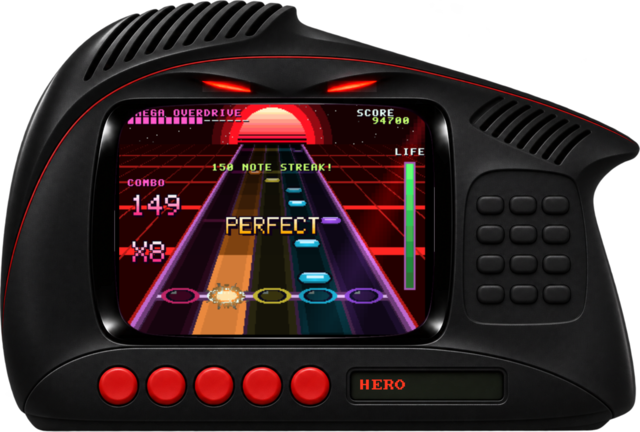

JAGUAR HERO |
 MAW |
 GHOSTGRID |
 WIREWING |
Every one of these is homebrew written in V in this repo and recorded straight out of vjag_test --video.
Press the jukebox buttons on the left to hear the music the emulated DSP made. <-- <-- <--
THE ONLY ATARI JAGUAR EMULATOR
WRITTEN IN V THAT WE KNOW OF

WHAT IS THIS?!vjag is an emulator for the Atari Jaguar, the 1993 console that wanted you to do the math. It emulates the whole odd machine:
About 14,000 lines of V. No C emulation cores underneath. SDL3 only puts the picture in a window and the samples in the speakers. And then it got out of hand: there is now a toolchain for writing Jaguar programs in V, a game engine that compiles V descriptions to 68000 code, five homebrew games, robots that play them in the tests, and a music video. |
Loading Java applet...
PLASMA.CLASS |
| DATE | NEWS FLASH |
|---|---|
| 2026-11-13 | ROBOPLAY! just roboplay ghostgrid opens the window and lets you watch a demo's test robot play the game, from the press file its test keeps. |
| 2026-11-13 | Press files. --press-file replays pad input from a file, in the window and in the headless runner, frame for frame the same. |
| 2026-11-13 | GHOSTGRID is complete. Ten stealth missions written with jaggame, with no assembly in them at all. See it! |
| 2026-11-13 | Jaguar Hero: a five-lane rhythm game with five original songs, from 113 to 180 BPM, played by a ten-voice DSP synthesizer. |
| 2026-11-12 | jagkit, MAW and WIREWING. Jaguar programs assembled from V, then a psytrance tunnel flyer and a wireframe flying game written with it, in one evening. |
| 2026-11-12 | First commit, 09:54. A 68000 interpreter with the SingleStepTests harness. 113 commits in two days followed. |
JAGUAR HERO |
MAW |
GHOSTGRID |
WIREWING |
Every one of these is homebrew written in V in this repo and recorded straight out of vjag_test --video.
Press the jukebox buttons on the left to hear the music the emulated DSP made. <-- <-- <--
# you need V 0.5.2, SDL3 and just brew install vlang sdl3 just git clone https://github.com/HelgeSverre/jaguar cd jaguar just run demos/hero.jag # play a game built in this repo just roboplay ghostgrid # watch the test robot play one just run path/to/your.j64 # bring your own cartridge dump
!! NO ROMS HERE !!No commercial ROMs and no boot ROM images come with this project or this site. Do not e-mail asking for them. Bring your own, or play the games that are built from source right here. |
118 OF 139!!Boot a pile of cartridge dumps for 15 seconds each and 118 of 139 show a moving picture. 3D worlds render, 2D games scroll, menus answer the pad, music plays. See the full scoreboard. |
THANKS FOR VISITING! COME BACK SOON!